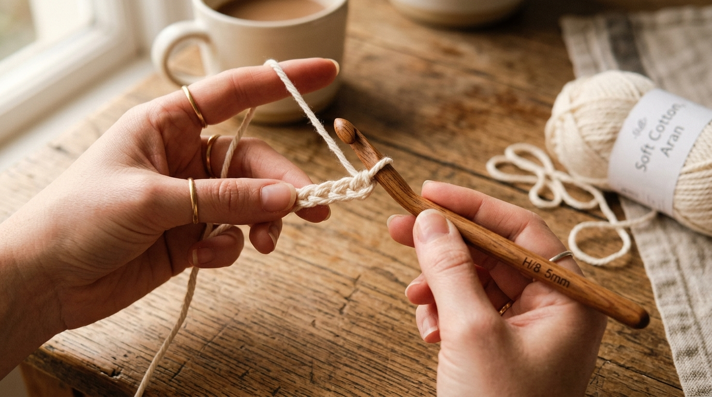
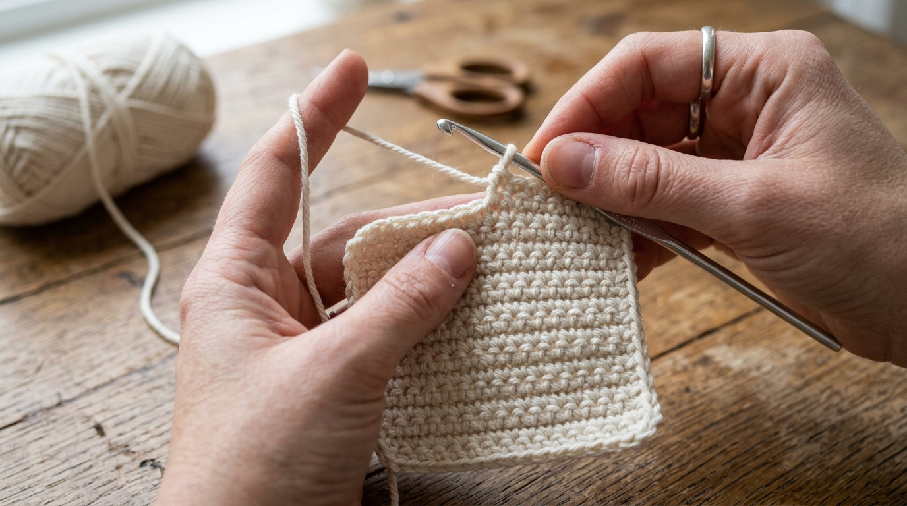
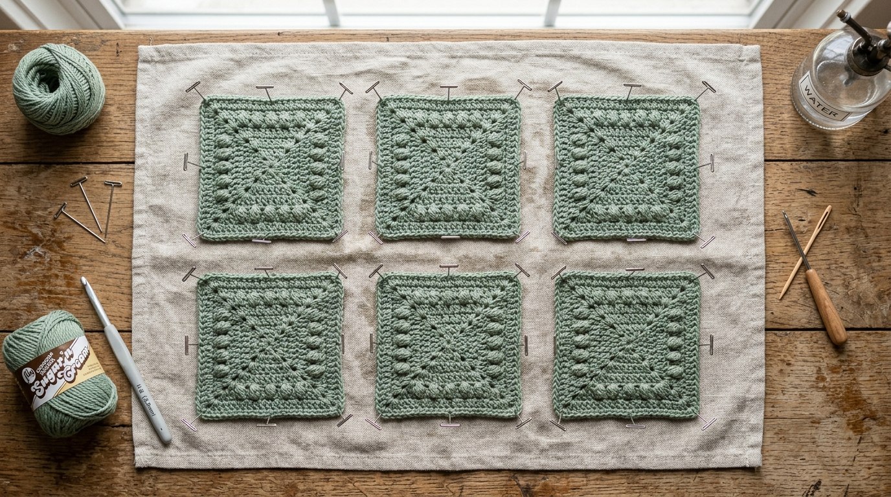

अगर आप क्रोशिया की दुनिया में पहला कदम रख रहे हैं, तो एक सादा चौकोर कोस्टर (Square Coaster) बनाना सबसे काम का और खूबसूरत प्रोजेक्ट है। इसे बनाने में 45 मिनट से भी कम समय लगता है, इसमें सिर्फ 15 ग्राम सूती धागा खर्च होता है, और यह आपकी लकड़ी की मेज को गर्म चाय के दागों और पानी के छल्लों से पूरी तरह सुरक्षित रखता है।
नीचे पूरा पैटर्न बेहद आसान भाषा में दिया गया है। हर एक कदम का मिलान नीचे दी गई तस्वीरों से करते जाइए और इत्मीनान से बुनते रहिए!
| कठिनाई स्तर: | शुरुआती / बेहद आसान (Beginner) |
| तैयार साइज: | 4 इंच x 4 इंच (10 सेमी x 10 सेमी) |
| जरूरी धागा: | 100% कॉटन यार्न (4-प्लाई / वर्स्टेड), लगभग 15 ग्राम |
| हुक का साइज: | 4.0 mm (G/6) |
| संक्षिप्त शब्द: | ch = चेन • sc = सिंगल क्रोशिया • st = फंदा • sl st = स्लिप स्टिच |
स्टेप-बाय-स्टेप निर्देश:
कदम 1: फाउंडेशन चेन (16 चेन बनाना)
धागे से एक स्लिप नॉट बनाएं और उसे क्रोशिया हुक पर चढ़ा लें। अब ढीले हाथ से 16 चेन (ch 16) बुनें। यह शुरुआती चेन लगभग 4 इंच चौड़ी होनी चाहिए।

कदम 2: पहली कतार की बुनाई (15 सिंगल क्रोशिया)
हुक से दूसरी चेन में हुक डालें और 1 सिंगल क्रोशिया (sc) बनाएं। इसके बाद बची हुई हर चेन में 1-1 सिंगल क्रोशिया बुनते हुए छोर तक जाएं। आपके पास कुल 15 सिंगल क्रोशिया हो जाएंगे। आखिर में 1 चेन बनाएं (ch 1) और काम को पलट लें।
कदम 3: चौकोर शरीर बुनना (कतार 2–16)
पहले फंदे से लेकर आखिरी फंदे तक हर एक में 1 सिंगल क्रोशिया बनाएं (कुल 15 फंदे)। 1 चेन बनाएं और पलटें। इसी प्रक्रिया को तब तक दोहराएं जब तक कि कुल 16 कतारें पूरी न हो जाएं। यह एक सुंदर 4" x 4" का चौकोर आकार ले लेगा। अभी धागा मत काटिए!

कदम 4: किनारों पर सुंदर फिनिशिंग बॉर्डर जोड़ना
कोस्टर को पेशेवर और दुकान जैसा लुक देने के लिए:
- ऊपरी कतार में सिंगल क्रोशिया करते हुए पहले कोने तक जाएं। कोने वाले फंदे में (1 sc, 1 ch, 1 sc) बनाएं ताकि कोना आसानी से मुड़ सके।
- अब साइड की कतारों के छोर पर 1-1 सिंगल क्रोशिया नीचे की ओर बुनें। अगले कोने में फिर से (1 sc, 1 ch, 1 sc) बनाएं।
- निचली चेन पर सिंगल क्रोशिया बुनें और कोने में (1 sc, 1 ch, 1 sc) करें।
- चौथी साइड में ऊपर की ओर बुनें और अंतिम कोने में (1 sc, 1 ch, 1 sc) बनाएं।
- पहले बॉर्डर स्टिच में स्लिप स्टिच (sl st) लगाकर जोड़ें। 4 इंच धागा छोड़कर काट लें और सुई की मदद से धागे को अंदर छुपा दें।
"हर कोने में (1 SC, 1 Chain, 1 SC) बुनने से चौकोर कोस्टर के कोने कभी मुड़ते या उठते नहीं हैं।"
कदम 5: वेट ब्लॉकिंग (Wet Blocking): कोस्टर को सपाट करने का राज
नया-नया बुना हुआ कोस्टर अक्सर किनारों से थोड़ा लहरदार या मुड़ा हुआ सा दिखता है। 'वेट ब्लॉकिंग' सूती रेशों को सीधा कर देती है और कोस्टर को बिल्कुल सीधा और समतल बना देती है।

- तैयार कोस्टर को हल्के गुनगुने पानी में 1–2 मिनट के लिए डुबोएं।
- तौलिए के बीच रखकर अतिरिक्त पानी हल्के हाथों से दबाकर निकालें (मरोड़ें या निचोड़ें नहीं)।
- तौलिए पर चपटा रखें, कोनों को खींचकर 4" x 4" का चौकोर रूप दें और स्टील की पिन से दबा दें।
- रात भर सूखने दें—सुबह आपका कोस्टर 100% सपाट और क्लासिक बन जाएगा!
अक्सर पूछे जाने वाले सवाल (FAQs)
लेखिका: गुरदीप सिधू (Gurdeep Sidhu)
संस्थापक, Sidhu's Views। धीमी जीवनशैली, हस्तनिर्मित कला, घरेलू साज-सज्जा और रचनात्मक लेखन की खोजी।